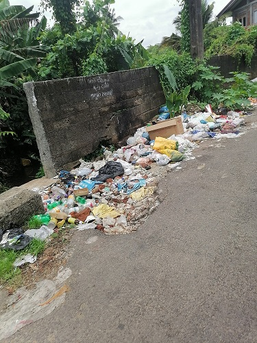
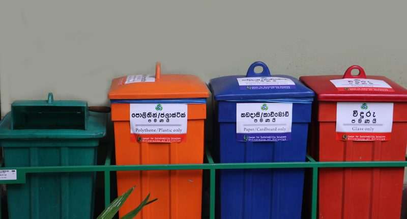

Garbage pollution, also known as solid waste pollution, has significant environmental, social and economic impacts. Improper disposal and management of waste can lead to a wide range of environmental pollution problems affecting human health, ecosystems and communities. Improper disposal of solid waste, including plastics, organics and hazardous materials, pollutes land, water and air and poses a threat to public health and threats to the environment.

Waste Reduction:
Promote waste reduction and mitigation strategies including source reduction, product redesign and packaging optimization to reduce the amount of waste generated at source.
Recycling and Resource Recovery:
Establishing recycling programs and infrastructure to separate, collect and process recyclable materials such as paper, glass, metal and plastic.
Proper Waste Disposal:
Ensure proper disposal of waste through construction and management of sanitary landfills and waste treatment facilities.
Protecting public health by reducing exposure to harmful pollutants and contaminants associated with waste pollution.
Conserve ecosystems and biodiversity by reducing the adverse effects of waste pollution on land, water and air quality.
Promote sustainable development and circular economy principles by conserving resources, reducing greenhouse gas emissions and creating economic opportunities through waste management and recycling initiatives.